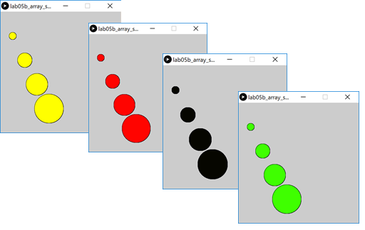

primitive arrays · length property · array of classes
In this step, we will update the solution to lab05a exercise 1 to include the length property.
Create a new Processing sketch in your workspace and call it lab10_exercise_1_updated.
Use the following code as your starting point (cut and paste):
int numbers[] = new int[10];
// initialise each value to 20
for (int i = 0; i < 10 ; i ++) {
numbers[i] = 20;
}
// now we print each value
for (int i = 0; i < 10 ; i ++) {
println("Number " + (i+1) + " is: " + numbers[i]);
}Run the code. Each of the 10 elements in the array is set to a starting value of 20.
Now update the code so that you use numbers.length instead of hard coding 10 into the for loop.
Run the code. It should work the exact same as previously, however, it is now more maintainable. Your code should now be:
int numbers[] = new int[10];
// initialise each value to 20
for (int i = 0; i < numbers.length ; i ++) {
numbers[i] = 20;
}
// now we print each value
for (int i = 0; i < numbers.length ; i ++) {
println("Number " + (i+1) + " is: " + numbers[i]);
}Now, change the size of the array to hold 15 elements - you should only need to change it in the array declaration. Run your code to make sure the 15 elements were initialised to 20.
Save your work and close the sketch.
In this step, we will start building arrays using String and Spot.
Create a new Processing sketch in your workspace and call it lab10_array_string.
Create an array of String with a size of 4.
In index location 1, place the String Dog. In index location 3, place the String Cat. Then cycle over the array and print out the contents of each element to the console.
Run your code. You should get output similar to this:
null
Dog
null
CatThe solution code is here:
String words[];
words = new String[4];
words[1] = "Dog";
words[3] = "Cat";
for (int i=0; i < words.length; i++)
{
println(words[i]);
}Save your sketch and close the project.
Create a new Processing sketch in your workspace and call it lab10_array_spot.
Create a new tab called Spot. Copy and paste this code into it:
//Spot Version 6.1
class Spot{
float xCoord, yCoord;
float diameter;
int red, green, blue, gray;
Spot()
{
}
Spot(float xCoord, float yCoord, float diameter)
{
this.xCoord = xCoord;
this.yCoord = yCoord;
this.diameter = diameter;
}
Spot(float xCoord, float yCoord, float diameter, int gray)
{
this.xCoord = xCoord;
this.yCoord = yCoord;
this.diameter = diameter;
colour(gray);
}
Spot(float xCoord, float yCoord, float diameter, int red, int green, int blue)
{
this.xCoord = xCoord;
this.yCoord = yCoord;
this.diameter = diameter;
colour(red, green, blue);
}
void display()
{
ellipse(xCoord, yCoord, diameter, diameter);
}
void colour(int red, int green, int blue)
{
this.red = red;
this.green = green;
this.blue = blue;
fill (this.red, this.green, this.blue);
}
void colour(int gray){
this.gray = gray;
fill (this.gray);
}
void move(float xCoord, float yCoord)
{
this.xCoord = xCoord;
this.yCoord = yCoord;
}
}In the main tab:
create an array of Spot with a size of 4.
add a setup() method and set the size of the sketch to (500,500). Inside this method, add a for loop that will populate the spot array with four new spots. Hint: you can use mathematical operators on the for loop index to generate xCoord, yCoord and diameter for each spot.
add a draw() method. This method should have a for loop in it that will display each spot in the array and also change the colour of the spot based on the mouse location.
Run your code. You should get output similar to this, depending on the mouse location:

The solution code for the main tab is here:
Spot[] spots;
void setup(){
size(500,500);
spots = new Spot[4];
for(int i = 1; i <= spots.length; i++){
spots[i-1] = new Spot(i*50, i*100, i*30);
}
}
void draw(){
for (int i=0; i < spots.length; i++){
spots[i].display();
spots[i].colour(mouseX, mouseY, 0);
}
}Save your sketch and close the project.
There is only one exercise this session and no challenges. This will free up the lab time for an assignment studio.
Create a new Processing sketch in your workspace and call it lab10_exercise_2_updated.
Use the following code as your starting point (cut and paste):
import javax.swing.*;
int numbers[] = new int[5];
//populate the array with user input
for (int i = 0; i < 5 ; i ++) {
numbers[i] = Integer.parseInt(
JOptionPane.showInputDialog(
"Please enter a number ", "3"));
}
// print each value in reverse order
for (int i = 4; i >= 0 ; i --) {
println("Number " + (i+1) + " is: " + numbers[i]);
}Run the code. Each of the 5 elements read in, should be printed in reverse order.
Now update the code so that you use numbers.length instead of hard coding the array size into the for loops.
Run the code. It should work the exact same as previously, however, it is now more maintainable.
Save your work and close the sketch.
The solutions for this lab can be found here.
If you require unzipping software, 7zip is a good choice: http://www.7-zip.org/ (or Keka for Mac http://www.kekaosx.com/en/)
After unzipping the solutions, it might be a good idea to copy the folders to your sketchbook folder. From Processing, you could then use File, followed by Sketchbook to easily open them.